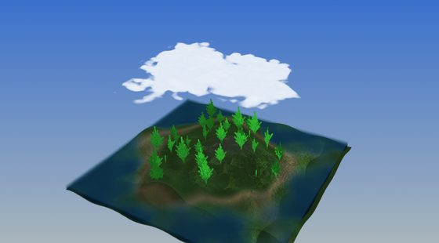
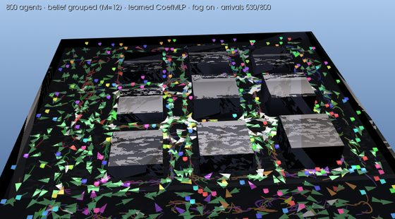
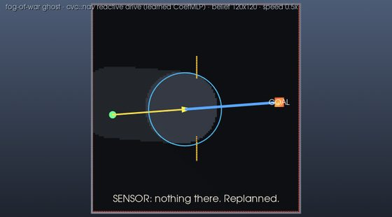

The libcvc scene-graph library, rendering live in your browser.
cvcGL is libcvc's Qt-free scene graph: a reactive tree of
geometry, volume and grid nodes over cvc::state, rendered by VTK.
The same C++ example programs that open a desktop window compile, unchanged in
any structural way, to WebAssembly — VTK 9.5's Emscripten backend renders into
a WebGL2 canvas, and the browser build of each example lives on this site.

An island you can fly over: L-system-grown trees swaying in the wind (procedural bark, merged to two actors), a travelling-wave sea and a drifting L-system + fBm cloud volume — both GPU ray-cast — shadow maps, and a quaternion orbit/fly camera. 100% procedural; no assets are downloaded.
Run it →
The GRL-SNAM reactive swarm,
rendered natively: 800 vehicles cross a varied-height city under fog
(grouped belief, 12 planes) with no global plan — goal pyramids that sink
on arrival, breadcrumb trails accumulating the street-flow, fleet fog coverage
painted on the ground, state-coloured agents (white = escaping, green = arrived)
and a live arrivals HUD. The cvc::nav runtime — no Python, no libtorch.
Every parameter is live in the on-screen menu — agent count, belief mode, fog,
sensor range — and Apply / Restart rebuilds the world so you
can watch shared belief beat private belief on the same city. Press
2 for the top-down view.

Fog of war: one vehicle believes a phantom wall its stale map shows but reality lacks. The ghost stands as a translucent amber 3-D wall that erodes cell by cell as the sensor clears it; the ground paints honest epistemics (never-seen black, remembered dim, in-view lit, belief as an LED grid), a blue plan line bows around the phantom vs the yellow driven trail, and a caption arc narrates the detour, the discovery, and the payoff. The menu switches between three limited-belief scenarios — ghost (a stale map lies), dynamic (the world changes after the plan is made) and traffic (other vehicles the map never had) — and restarts the run in place.
Run it →Every demo above carries a real UI, not a text overlay. It is
Dear ImGui composited into VTK's own
framebuffer by cvc::gl::ImGuiOverlay, with widgets
(cvc::gl::ui) bound straight to cvc::state paths — so a
slider, a script and a replicated peer all write the same state node, and the
menus work identically native and in the browser.
click to focus, Tab to
swap orbit/fly, WASD+mouse to fly, Esc to release the
pointer. The overlay only takes the mouse when the cursor is actually over a
widget, so the camera never fights the UI.cvc::gl::TouchGestures.
Single touches are deliberately left alone, so tapping a menu still works.
(VTK's own wasm interactor mis-feeds multi-touch — it registers one pointer for
two fingers, so its gesture recognizer never fires — which is why this layer
exists.)requestAnimationFrame, where the
browser's transient-activation window has already closed and a fullscreen
request is refused.cvc::gl::clipboard: X11 selections, NSPasteboard, Win32, and
navigator.clipboard in the browser).Each example is a single self-contained .wasm (plus a small JS
loader) produced by emcmake from the normal libcvc CMake tree:
cvc core (state tree, geometry/volume types), cvcGL's scene
graph, VTK 9.5 with its rendering modules, Boost and zstd — all as static
archives from the cvcpkg wasm channel
(Emscripten SDK included: cvcpkg install emsdk).vtkWebAssemblyOpenGLRenderWindow draws with OpenGL ES 3
into a WebGL2 canvas, and vtkWebAssemblyRenderWindowInteractor
feeds it browser mouse/keyboard events. The example keeps its own
simulation loop and yields to the browser each frame with Asyncify
(emscripten_sleep) — the same
ProcessEvents()-per-frame pattern the native build uses.-pthread variant exists in the repo
(build-wasm-demo.sh --pthread + serve.py for
cross-origin-isolated hosting).cvc::state — camera pose and
bindings, the FPS HUD, node poses — so the same scene is scriptable from
native C++, Python (pycvc), or a debugger attached to the state tree.The port needed three real fixes, all upstreamed to the libcvc / libcvc-deps trees; details in the PRs:
| Issue | Fix |
|---|---|
Under GLES3, VTK swaps in a different polydata mapper whose lighting
normal is normalizedNormalVCVSOutput; custom
//VTK::Normal::Impl shader replacements that assign the
desktop name write to an in varying — an ESSL error that
NVIDIA's desktop compiler silently tolerates. |
The example selects the mapper variant's writable normal at compile time; desktop GLSL is unchanged. |
VTK's volume ray-cast shader composer emits mat4 globals
initialized from uniforms — illegal in ESSL 3.00, killing every
shaded/scattering volume (the sea and the clouds). |
A small VTK patch moves the assignments into an init helper called at the top of the ray-cast setup. |
Boost refuses to compile without -pthread, but a
single-threaded wasm build must not use it. |
Build against Emscripten's single-threaded pthread stubs
(BOOST_HAS_PTHREADS), skip the scene's publisher thread, and
drain its queue from the frame loop. |
# toolchain + wasm deps straight from the cvcpkg catalog
cvcpkg install emsdk --platform linux --prefix ./emsdk
cvcpkg install boost zstd cgal --platform wasm --arch wasm32 --link static --prefix ./deps-wasm
# vtk needs the rendering-enabled wasm build (libcvc-deps: recipes/vtk, >= 9.5.0+cvc.3)
cvcpkg build vtk --platform wasm --local --prefix ./deps-wasm
# then, from the libcvc repo root:
CVC_EMSDK_DIR=$PWD/emsdk CVC_WASM_DEPS=$PWD/deps-wasm \
./src/cvcGL/examples/wasm/build-wasm-demo.sh
python3 -m http.server -d build-wasm/bin 8811Or, once the bundles are published, as a package:
cvcpkg install cvcgl-examples --prefix ./deps
cvcpkg install cvcgl-examples --platform wasm --arch wasm32 --link static --prefix ./deps
./deps/bin/cvcgl-examples-web # serves the demo and opens your browser